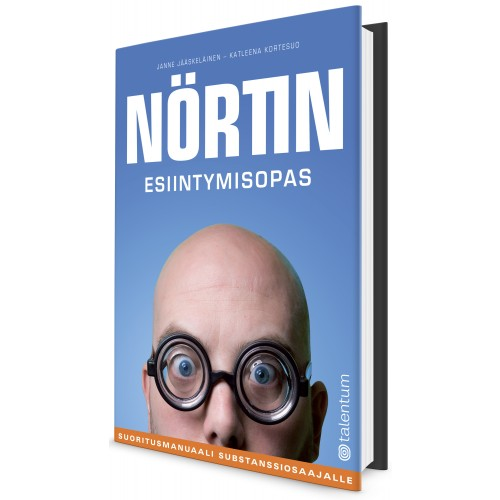

Kuinka nörtti oppii puhumaan maallikolle? Miten esiintyä niin, että yksinkertaisinkin ymmärtää?
Liian moni ict-osaaja luulee, että vain substanssiosaamisella on väliä: esiintymistaidot ja sosiaaliset taidot ovat sivuseikka, pelkkää teatteria. Aika usein teatterinpitäjä kuitenkin vie kaupat. Miten tässä näin kävi?
Nörtin esiintymisopas perehdyttää ict-osaajan esiintymis- ja viestintätaitojen perusteisiin, alan käsitteiden tulkkaamiseen maallikoille sekä myyvän ja selkeän presentaation laatimiseen. Kirjan oppien ja neuvojen avulla kasvatat myyntiäsi, edistät uraasi ja opit nauttimaan esiintymisestä.
Tämä hauskasti kirjoitettu opas neuvoo nörtille esiintymisen ja kokoustamisen perustaidot — ja varoittaa myös niistä yleisistä virheistä, joita ei pidä tehdä.
Jos saisin määrätä yhden tenttikirjan kaikille yliopisto-opiskelijoille, se olisi tämä.